Mode opératoire de l’application SUSAR_EU_V2 2
I - Gestion des substances « suivies » – Action pilotes VEC/DSURV 2
A - Mise à jour de la liste des substances par les pilotes VEC 2
Il est possible de visualiser le détail d’un intervenant/substance en cliquant sur la substance : 5
II – Import des fichiers CTLL - Action DMFR 7
A – Récupération de la liste des substances actives 7
B – Copie de cette liste des substances actives dans le site EVDAS de l’EMA 8
D – Importation du fichier « CTLL (Clinical Trial Line Listing).xlsx » dans SUSAR_EU_v2 13
III – Évaluation des SUSARs - Action DMFR 15
A – Écran « liste des SUSARs » - présentation de l’écran 15
IV – Exports pilotage et bilan des imports DMFR - Action Pilotes VEC et visibilité DMFR 22
B – Écran « bilan des imports » 23
Introduction
L’application SUSAR_EU_v2 vise à remplacer un précédent outil développé sous Access (SUSAR_EU) qui ne permettait pas son utilisation en télétravail. De plus, l’importante quantité de données après plusieurs années d’utilisation le rendait très lent. Ces deux problèmes sont dans résolus avec cette nouvelle version.
SUSAR_EU_v2 est une application développée en PHP/Symfony, les utilisateurs y accèdent depuis un navigateur (Firefox et Chrome ont été testés), via l’URL suivante :
http://172.16.63.170/susar_eu_v2/public/index.php/
L’utilisateur est alors invité à se connecter, le login est son adresse mail ANSM.
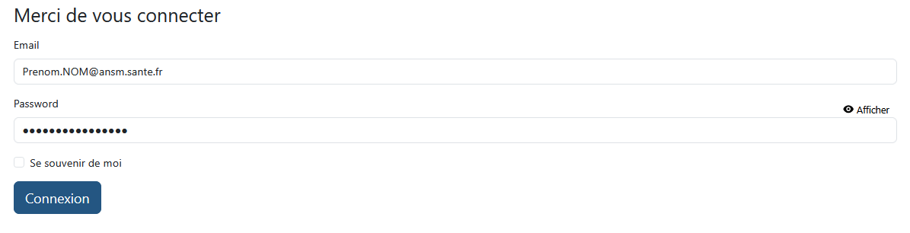
Si l’utilisateur n’a pas encore de compte actif, il peut en faire la demande directement auprès de l’administrateur de l’application : Frederic.RANNOU@ansm.sante.fr
Dans le menu « Gestions de substances », sélectionner « Intervenants/substances » :
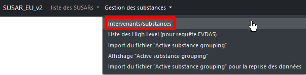
Comme cela se faisait dans la table « Intervenant_Substance_DMM » de susar_eu_v1, une mise à jour de la liste des substances saMS ou Mono-nationale doit toujours être réalisée.
Un écran dédié aux pilotes VEC est disponibles depuis les liens mentionnés plus haut.
Sur cet écran, tous les substances s’affichent pour le moment, en vert les actives et en rouges celles qui sont inactivées, avec un tri alphabétique par nom de substance. Ce nom correspond au « high level substance name ».
Il est prévu d’ajouter ultérieurement, un champ permettant de filtrer les substances affichées selon le nom, si la ligne est active ou pas, la direction, le pôle, …
Dans la partie supérieure de cet écran un bouton 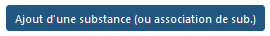 permet d’ouvrir un écran afin d’ajouter une ligne dans la table correspondante :
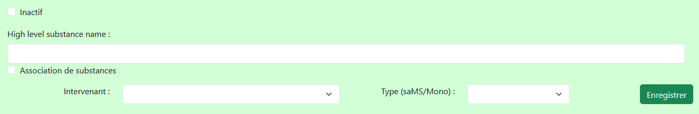
Les champs suivants sont obligatoires :
High level
menu déroulant « Intervenant ».
Type (saMS/Mono)
Exemple : 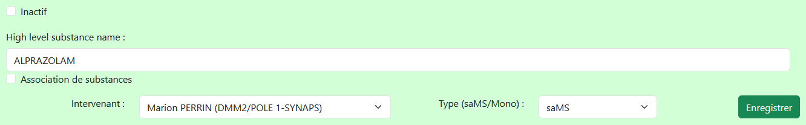
Dans ce cas l’utilisateur peut simplement valider après avoir rempli les 3 champs listés plus haut.
Il sera alors redirigé sur l’écran de la liste « intervenant substance DMM » avec la nouvelle ligne qui vient d’être crée.
Avec ce type de paramétrage, la DMFR recherchera tous les « low-level substance name » lié au high level renseigné pour qu’ensuite l’import BNPV se fasse par low-level.
Dans ce cas, l’utilisateur doit cocher la case 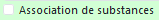 , ce qui fait apparaitre un nouveau bouton, permettant d’ajouter plusieurs substances.
Pour ce type de paramétrage, le high-level principal (celui situé en haut de l’écran, dans la zone verte) ne sera pas celui qui sera utilisé pour la recherche des différents low-level.
Mais ce seront les différents « sous high-level » (ceux situés dans les sous-formulaires jaunes) qui seront mappé avec leurs low-level puis utilisés dans la recherche des substances lors de l’import.
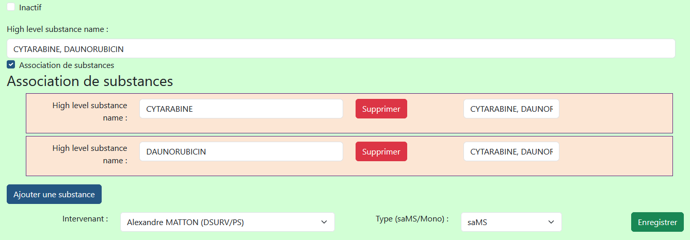
Il est bien entendu possible de supprimer, grâce au bouton rouge, une substance liée.
Cette fonctionnalité est disponible en cas d’erreur de saisie sur une ligne du paramétrage.
Il ne doit pas être utilisé pour « transformer » une ligne affectée à une substance vers une autre.
Dans ce dernier cas, il convient d’inactiver l’ancienne substance, puis d’en créer une nouvelle.
La modification est donc possible en cliquant sur le bouton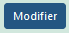 .
Tous les champs sont alors modifiables, qu’il s’agisse d’une association de substance ou pas.
Il est souhaitable d’inactiver une substance, plutôt que de l’effacer, ceci afin de garder un historique.
Pour cela cliquer sur le bouton .
Puis de cocher la case 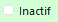 .
Le fond du formulaire apparait alors en rouge :
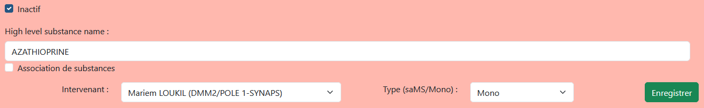
On valide ensuite avec le bouton « enregistrer ».
Il est bien entendu possible d’effectuer l’opération inverse, pour réactiver une ligne.
S’il existe déjà une substance qui a un statut « actif » dans la base de données (par exemple AFICAMTEN, en vert) :
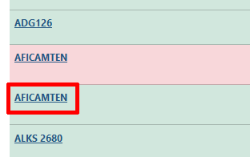
Et que l’utilisateur souhaite, par erreur, récréer une substance :
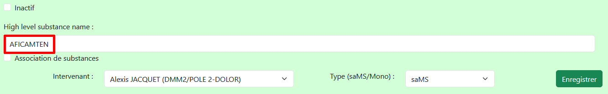
À la validation, le système affichera un message d'erreur et l'enregistrement de cette substance ne se fera pas :
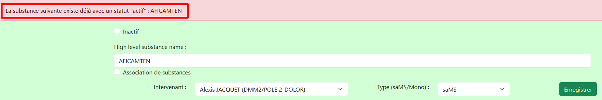
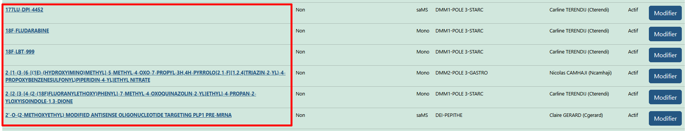
Cela ouvre alors un nouvel onglet ou sont affichées les informations suivantes.
Pour les substances ayant des SUSARs importés dans la base de données, un tableau et un graphique sont affichés ou sont indiqués le nombre de cas par mois :
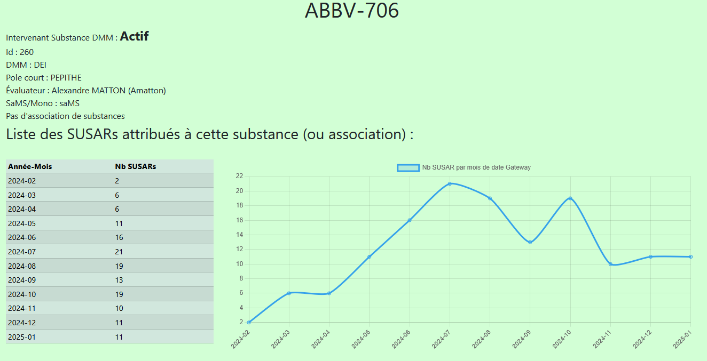
Cette étape est nécessaire car elle permet de récupérer, via EUDRA vigilance, la liste des substances « synonymes » aux « high-level substance name » renseignées par les pilotes VEC lors de l’étape précédemment décrite.
Une fois ces données récupérées puis chargées dans SUSAR_EU_v2, elles seront utilisées par le script d’import automatique qui tourne toutes les nuits. Ce script permet d’alimenter la base SUSAR_EU_v2 à partir des données issues de la BNPV en requêtant par « low-level ».
Ainsi on récupère tous les cas y compris si la substance change de nom (passage d’un code produit a une DCI, formatage différent selon les pays, …).
Dans le menu « Gestions de substances », sélectionner « Liste des high level (pour requête EVDAS) »
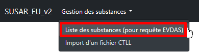
Une liste des substances apparait alors
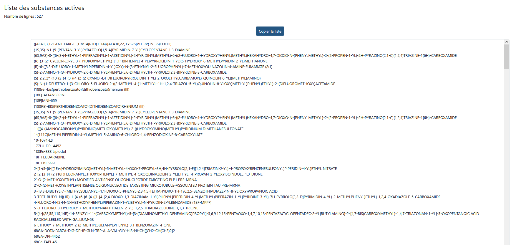
Cette liste doit être copiée, grâce au bouton « Copier le liste », sur le site EVDAS, …
… et sur l’onglet « CTLL (Clinical Trials Line Listing) ».
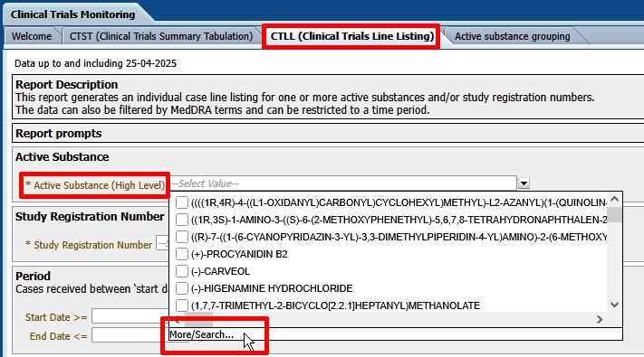
Avant la copie de cette liste de substances, il est nécessaire de réinitialiser les différents champs grâce au bouton suivant :
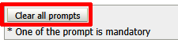
Il convient ensuite d’ouvrir le menu déroulant « * Active Substance (High Level) », il faut cliquer sur « More/Search ».
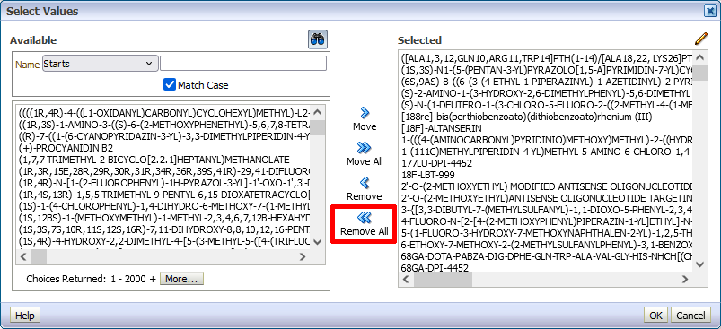
Si la fenêtre qui s’affiche contient des données dans le champ « Selected » situé à droite, il faut tout supprimer en cliquant sur le bouton « Remove All » .
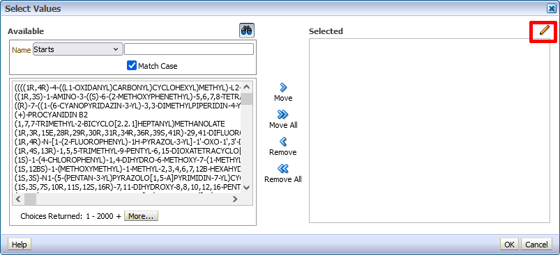
Puis cliquer sur l’icône « crayon ».
Ce qui ouvre encore une nouvelle fenêtre, dans laquelle il faudra éventuellement effacer l’intégralité de son contenu (Ctrl + A, puis « Suppr » ou « retour arrière ») :
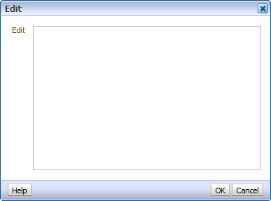
On revient dans susar_eu_v2, pour sélectionner toutes les substances (Ctrl + A), puis toutes les copier (Ctrl + C) …
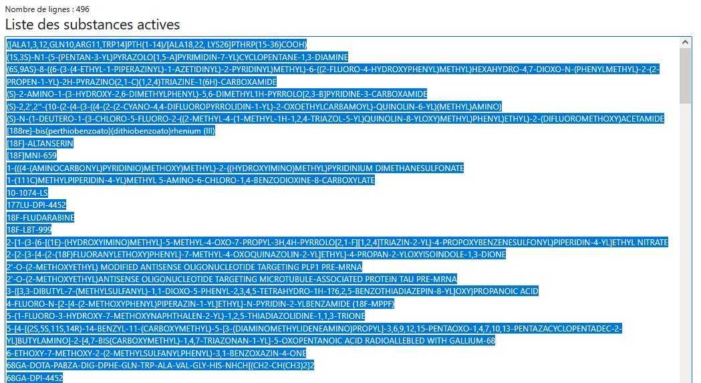
… et ensuite toutes les coller dans la fenêtre EVDAS :
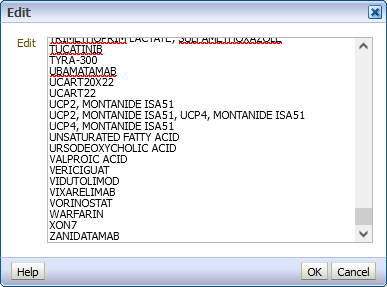
Il faut alors fermer les deux fenêtres EVDAS en cliquant une première fois sur OK
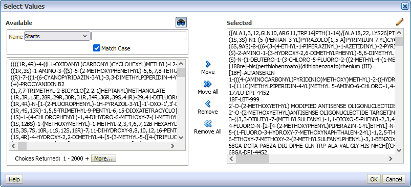
Puis une deuxième fois.
Le menu déroulant est maintenant replié, mais contient la liste des substances :
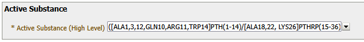
On sélectionne alors une fourchette de dates basée sur la « Gateway Date » :
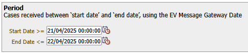
On clique ensuite sur le lien « CTLL (Clinical Trial Line Listing) » : 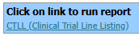
Ce qui déclenche l’ouverture d’une nouvelle page :
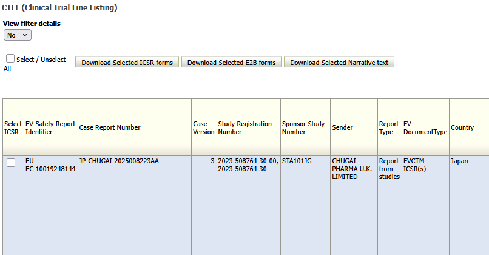
On exporte alors ces données générées grâce à « Export/Data/Excel »
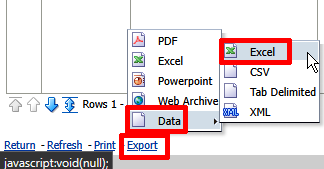
Un export Excel se crée …
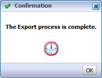
… puis se télécharge :
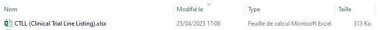
Dans la barre de navigation, sélectionner « Import du fichier CTLL »
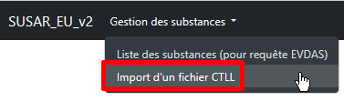
Dans l’écran suivant, il faut cliquer sur « Parcourir » puis sélectionner le fichier Excel précédemment téléchargé.
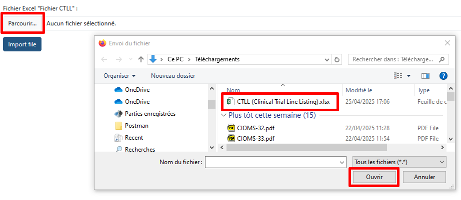
On lance ensuite l’import grâce au bouton « Import file » :
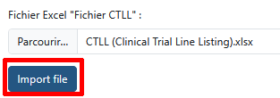
Lorsque l’import est terminé, un bilan affiche alors différentes informations.
L’application informe également l’utilisateur que tous les SUSARs ont bien été attribués (à un évaluateur ANSM), grâce au message entouré en rouge, plus bas :
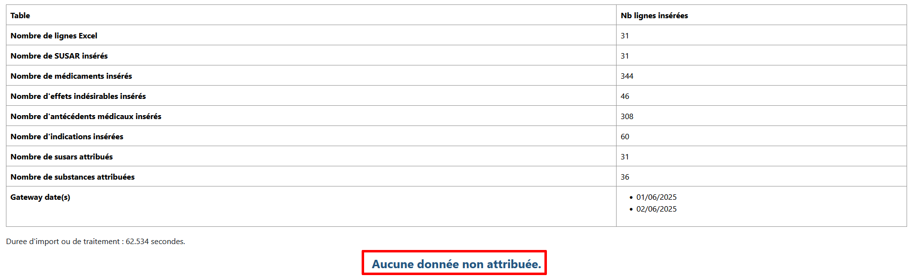
En cas de problème d’attribution de susar, le ou les cas en question sont directement affichés dans la partie basse de l’écran.
L’administrateur de la base doit alors être averti.
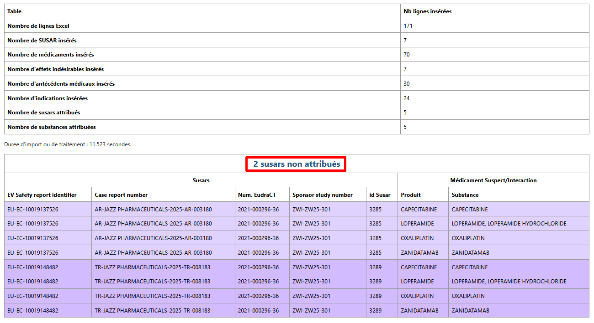
Après importations des SUSARs, par la DMFR, des fichiers CTLL provenant de l’EMA, les cas France/saMS et Mono-nationaux sont disponibles pour évaluation dans SUSAR_EU_v2.
Cet écran est accessible via le menu « Liste des SUSARs » :
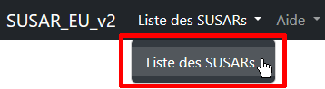
Les différents champs de recherche ont été regroupés par thèmes afin d’améliorer la lisibilité.
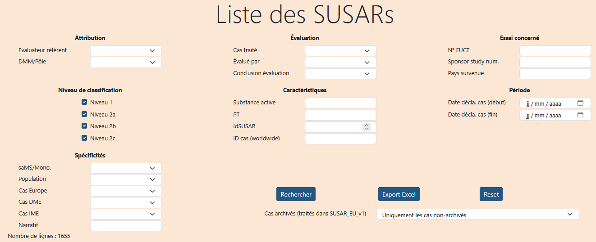
Liste des champs de recherche :
Cas archivés (traités dans SUSAR_EU_v1) : par défaut, est sélectionné « Uniquement les cas non-archivés ». Cela correspond aux cas importés dans la base après la migration susar_eu => susar_eu_v2 (vendredi 23/05/2025 au soir), ainsi que les cas d’origine Access à partir du 16/04/2025. Avec ce menu déroulant, on peut donc visualiser :
Uniquement les cas non-archivés
Uniquement les cas archivés
Tous les cas
Évaluateur référent : Évaluateur DMM ou DEI attribué aux SUSARs lors de l’import
DMM/Pôle : Direction et pôle attribué aux SUSARs lors de l’import
Cas traité : SUSAR ayant été évalué ou non
Évalué par : Évaluateur ayant évalué le cas
Conclusion évaluation : Évaluation renseignée (Concern in CT, Monitor, …)
N° EUCT : Numéro EUDRA CT de l’essai clinique
Sponsor study num. : Référence du promoteur de l’essai clinique
Pays survenue : Pays ou le SUSAR a été constaté
Niveau de classification : Niveau de classification du cas attribué lors de l’import (Niveau 2a : décès en Europe ou pronostic vital engagé en Europe, …)
Substance active : Subtance active suspecte, en anglais, du susar
PT : Effet indésirable, selon le niveau PT meddra en anglais du susar
idSUSAR : identifiant unique d’un cas dans la base de données de SUSAR_EU_v2
ID cas (worldwide) : worldwide id du cas, cette information permet nottamment de rechercher le cas en question dans les différents systèmes d’information.
Date décla. (début et fin) : fourchette de dates correspondant a la gateway date, c’est-à-dire la date de déclaration du cas dans EUDRA
saMS/Mono : cas dont la France est saMS sur la substance ou bien il s’agit d’une substance mono-nationale.
Population : Type de population (Paediatric, Adult, …)
Cas Europe : Cas survenu en Europe
Cas DME : Effet indésirable présent dans la liste des DME
Cas IME : Effet indésirable présent dans la liste des IME
Narratif : Recherche textuelle d’un mot dans les 3000 premiers caractères du narratif
Il existe de plus 3 boutons permettant de réaliser des actions en rapport aux différents champs de recherche :
Rechercher : Lance la recherche selon les critères renseignés
Export Excel : Après qu’une recherche ait été lancée, ce bon permet d’exporter la liste des SUSARs obtenue sous un format Excel. Le fichier est automatiquement téléchargé lorsque la requête est terminée.
Reset : Permet de remettre les champs de recherche a l’état initial : tous les champs a vide, sauf Cas archivés (traités dans SUSAR_EU_v1) à « Uniquement les cas non-archivés ».
Les différents susars s’affichent dans des rectangles alternativement mauves et violets, pour les susar actifs, d’origine SUSAR_EU_v2 et rouge clair et rose pour les susar inactifs, d’origine SUSAR_EU_v1 (base Access).
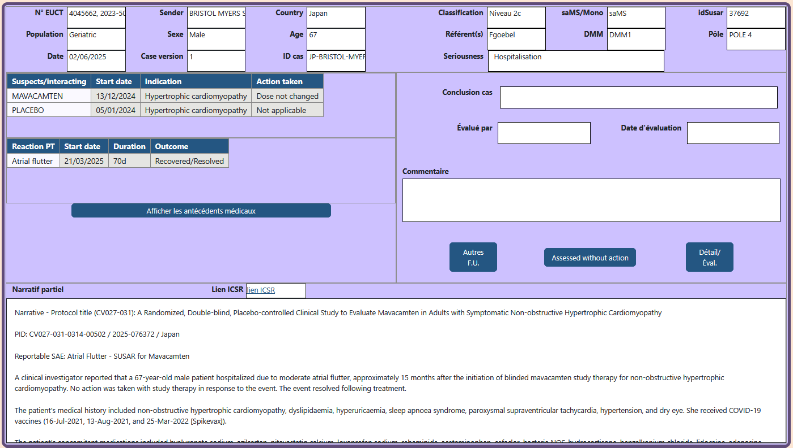
Les informations affichées dans cette liste de cas correspondent aux champs de recherche décrits plus haut, avec néanmoins quelques ajouts :
Serioussness : Critère(s) de gravité du cas
Tableau « suspect/interacting » : Informations détaillées sur les médicaments suspects ou en interactions présentes dans les fichiers CTLL.
Tableau reaction PT : Information détaillées sur les effets indésirables présents dans les fichiers CTLL.
Bouton « Afficher les antécédents médicaux » : Permet d’afficher un tableau des « medical history » présents dans les fichiers CTLL. Il a été choisi de masquer ces données par défaut.
Lien ICSR : il s’agit d’un lien hypertext vers la fiche ICSR présente sur le site de l’EMA. Pour s’y connecter l’utilisateur doit être titulaire d’un compte EMA.
Il existe de plus 3 boutons permettant de réaliser des actions liées a l’évaluation du cas. Leurs effets seront décrits dans le paragraphe suivant.
Autres F.U. : Permet d’ouvrir un nouvel onglet dans le navigateur pour afficher tous les « case version » d’un même cas présent dans la base.
Assessed without action : permet d’évaluer en un clique, tous les couples substance/PT d’un cas a « assessed without action »
Détail/Éval. : Permet d’ouvrir un nouvel onglet dans le navigateur et d’y afficher le détail d’un SUSAR.
Comme décrit plus haut, plusieurs méthodes sont possibles pour évaluer un SUSAR
L’appui sur ce bouton déclenche la création d’une évaluation pour chaque couple substance suspecte/PT du SUSAR en question.
Lorsque le traitement est terminé, un message s’affiche dans la partie haute de l’écran s’affiche pour avertir l’utilisateur :
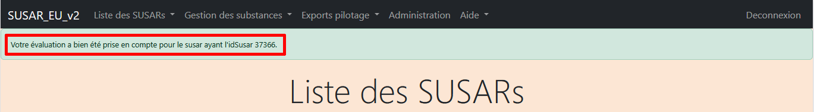
Le SUSAR est automatiquement mis à jour de la façon suivante :
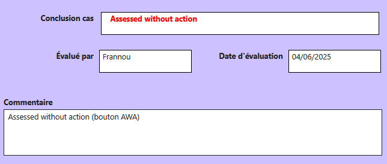
Si le cas est attribué à plusieurs évaluateurs, la pop-up suivante, s’affiche :
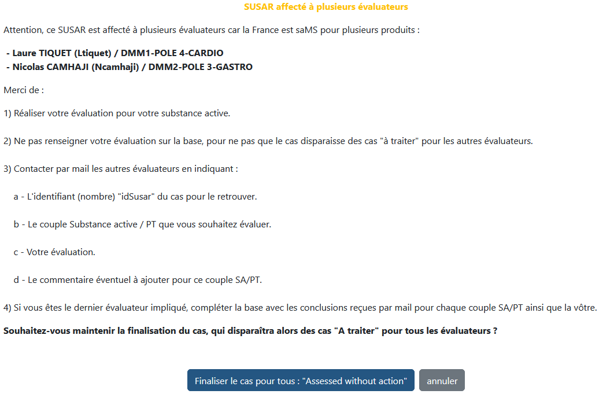
Le nom du ou des autres évaluateurs est mentionné afin de pouvoir les contacter et ainsi rendre un avis collégial.
L’appui sur ce bouton déclenche l’ouverture d’un nouvel onglet avec les informations détaillées du SUSAR.
Les évaluations sont affichées dans le paragraphe orange. Pour un SUSAR non évalué, l’affichage est le suivant :
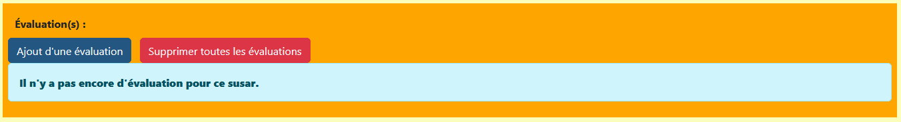
Il est alors possible d’ajouter une évaluation grâce au bouton bleu « Ajout d’une évaluation », cela ouvre alors l’écran suivant :
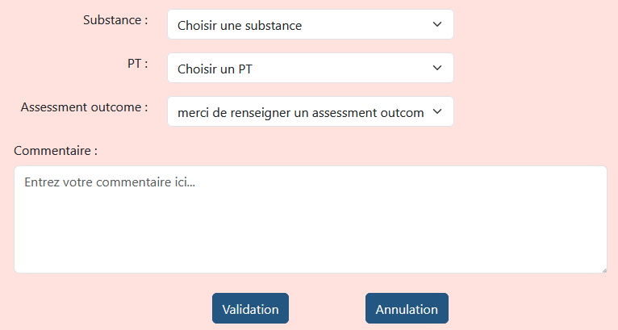
Il convient alors de renseigner un « assessment outcome » pour le couple substance / PT sélectionné grace aux deux menus déroulants du haut.
Il est également possible de renseigner un commentaire.
La validation va déclencher la création des évaluation a « Assessed without action » pour les autres couples SA/PT du SUSAR et avertir l’utilisation grâce à l’affichage du message suivant :
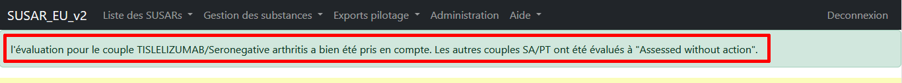
Le paragraphe orange est alors complété :
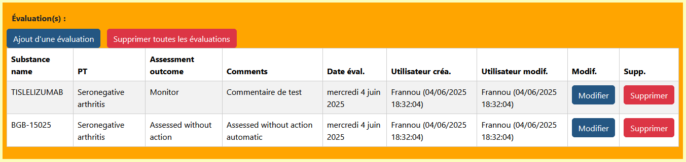
Il est alors possible de modifier ou de supprimer chacune des évaluations d’un couple donnée.
Pour quitter cet onglet du détail d’un cas, il est conseillé de cliquer sur le bouton « Fermer cet onglet ». Cela permettra de déclencher la mise à jour de l’onglet présentant la liste des SUSARs.
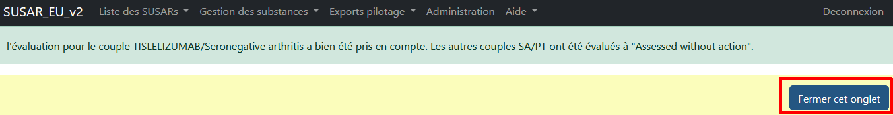
Si le cas est attribué à plusieurs évaluateurs, l’appuie sur le bouton « Détail/Éval. », la pop-up suivante, s’affiche :
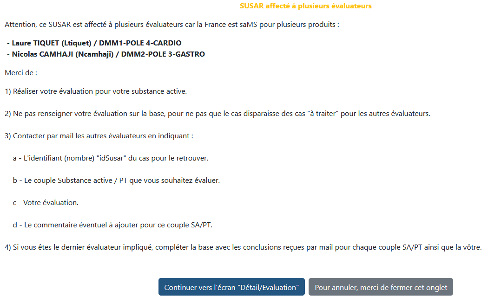
Le nom du ou des autres évaluateurs est mentionné afin de pouvoir les contacter et ainsi rendre un avis collégial.
Ce bouton permet d’ouvrir un nouvel onglet affichant les différentes « case version » d’un même « WorldWide id » présentes dans la base de données de SUSAR_EU_v2.
Il est ainsi possible de visualiser le travail précédemment fait pour ce cas.
Les différents follow-up sont triés avec le plus récent en haut.
Les évaluations sont alors possibles selon les deux méthodes décrites précédemment :
Bouton Assessed without action
Bouton Détail/Éval.
Mais également par une troisième méthode « Évaluation en masse des Follow-up », en effet, pour les susars affectés à un seul évaluateur, un petit formulaire spécifique est visible dans la partie haute de cet écran :
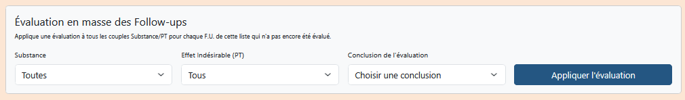
L’utilisateur peut sélectionner une substance et un PT puis une conclusion et enfin cliquer sur le bouton « Appliquer l’évaluation ». Cela va, pour chaque susar ayant le World Wide ID courant (=les différents follow up), qui ne sont pas déjà évalués, affecter l’Assessment outcome sélectionné au couple SA/PT sélectionné. Les autres couples seront évalués à « Assessed without action ».
Si l’utilisateur sélectionne « toutes substances » ou « tout PT », l’évaluation sélectionnée sera appliquée à ces couple SA/PT.
Comme il est précisé plus haut, les SUSARs déjà évalués ne sont pas affectés par cette évaluation en masse.
Pour les SUSARs attribué à plusieurs évaluateurs, cette fonctionnalité n’est pas accessible, un message, informe alors l’utilisateur :
Après importations des SUSARs, par la DMFR, des fichiers CTLL provenant de l’EMA, les cas France/saMS et Mono-nationaux sont disponibles pour évaluation dans SUSAR_EU_v2.
Cet écran permet d’exporter une extraction Excel des cas :
Non évalués
Dont le niveau de classification est de 2 (Niveaux 2a, 2b et 2c)
Selon une fourchette de date de déclaration (gateway date)
Il est accessible via le menu suivant :
Un formulaire s’affiche alors, ou il convient de renseigner une fourchette de date :
Le bouton « Extraction » déclenche alors la génération du fichier Excel qui est ensuite automatiquement téléchargé :
Ce fichier Excel, permet notamment d’identifier les cas (idSUSAR, WWid et case version), les substances, la gateway date et la date prévisionnelle (gateway date + 15 jours).
Cet écran permet de visualiser des statistiques
Il est disponible, pour les pilotes VEC via le menu suivant :
Et pour les référentes DMFR via celui-ci :
Dans la partie supérieure, un tableau présente différentes lignes, chacune correspondant à un fichier CTLL importé.
Il est alors possible de visualiser certaines infos correspondant à ces différents imports comme les gateway date concernées, le nombre de lignes du fichier CTLL, le nombre de SUSARs insérés dans la base, … :
En cas de susar non-attribués les lignes correspondantes apparaissent en rouge :
Dans la partie inférieure, deux graphiques permettent d’avoir quelques statistiques sur le nombre de SUSARs importés :